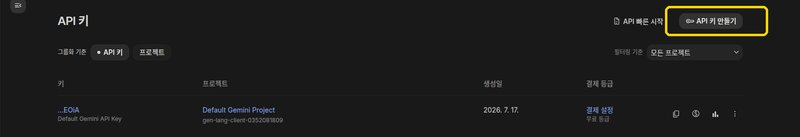
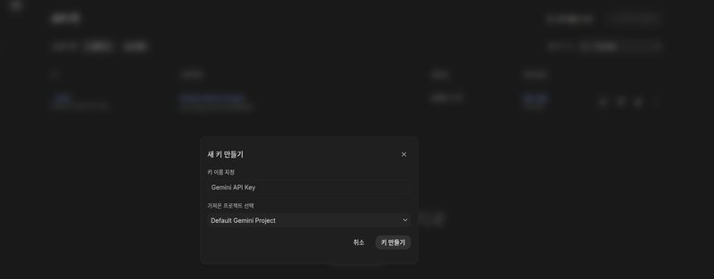
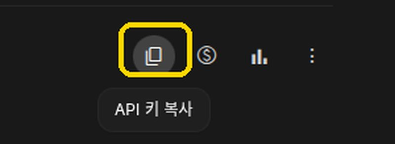

음식 사진 찍기
밥상 전체가 위에서 잘 보이게, 밝은 곳에서 찍을수록 정확합니다.
사진 찍기 · 올리기
여기를 누르면 카메라나 앨범이 열립니다
음식을 살펴보고 있습니다…
일반적인 식이 지침을 규칙으로 옮긴 참고 도구입니다. 진단·처방·치료를 대신하지 않습니다. 약 복용, 식사 계획 변경은 반드시 담당 의사·영양사와 상의하세요.
수록된 음식 대부분의 영양값이 일반 조리법 기준 추정치이며 아직 영양사 검토를 거치지 않았습니다. 같은 이름의 음식이라도 조리법·업체에 따라 나트륨이 두 배까지 차이 납니다. 판정이 실제와 다를 수 있습니다.
퓨린·비타민K·요오드·철·카페인·레티놀은 공공 데이터베이스에 없어 문헌 추정치를 씁니다. 통풍·와파린·갑상선·빈혈·임신 판정은 다른 항목보다 오차가 큽니다.
알레르기 반응, 저혈당, 호흡곤란, 삼킴 사고가 의심되면 이 앱을 보지 말고 119에 연락하세요.
앓고 있는 질환이나 상태를 고르고 음식을 알려 주면, 각각의 식이 기준에 따라 판정해 드립니다.
어떤 방법을 쓰든 판정 기준은 똑같습니다. 인식 방법만 달라집니다.
해당하는 것을 모두 눌러 주세요. 여러 개를 골라도 됩니다. 한 번 고르면 계속 저장됩니다.
넣지 않아도 판정됩니다. 넣으면 체중·나이에 맞춰 기준이 조정됩니다. 입력값은 이 기기 안에만 저장되고 어디로도 전송되지 않습니다.
가장 정확한 인식을 위해 필요합니다. 키를 넣으면 여러분 본인의 무료 한도를 쓰게 되어, 저희 서버 비용도 안 들고 여러분이 결제할 일도 없습니다.



이 키는 이 기기에만 저장되며, 저희 서버로 전송되지 않습니다. 구글의 무료 한도 안에서 쓰이며, 한도를 넘으면 자체 모델의 결과만 쓰이니 앱이 멈추지 않습니다. 설정에서 언제든 바꾸거나 지울 수 있습니다.
밥상 전체가 위에서 잘 보이게, 밝은 곳에서 찍을수록 정확합니다.
AI가 틀릴 수 있습니다. 빠진 것은 더하고, 잘못된 것은 지워 주세요. 양도 고칠 수 있습니다.
아직 고른 음식이 없습니다. 위에서 검색해 더해 주세요.
이 판정은 일반적인 식이 원칙을 규칙으로 옮긴 참고 정보이며, 의료 진단이나 처방이 아닙니다. 정확한 식사 계획은 담당 의사·영양사와 상의하세요. 음식 인식과 양 추정에는 오차가 있습니다. 임신 중이거나 성장기 아동의 식사는 특히 임의로 줄이지 마시고 전문가와 상의하세요.